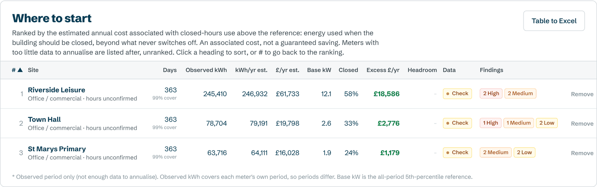
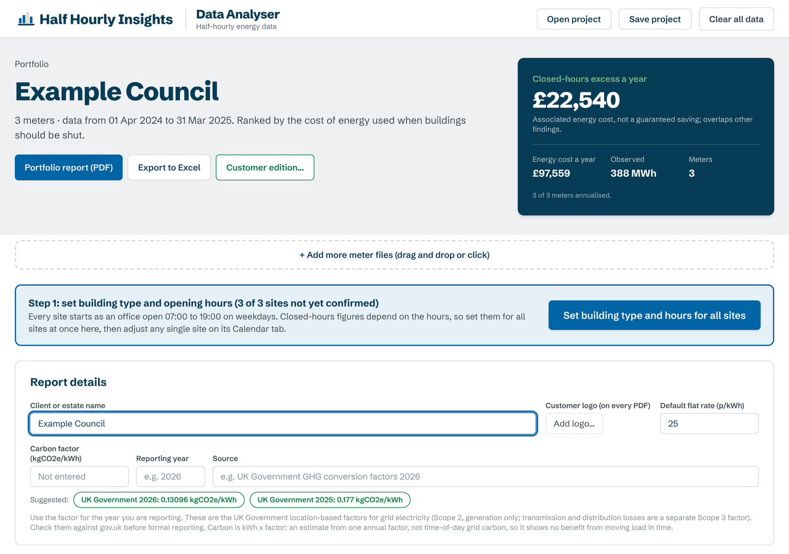
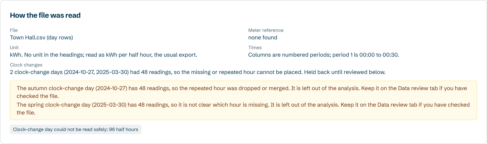
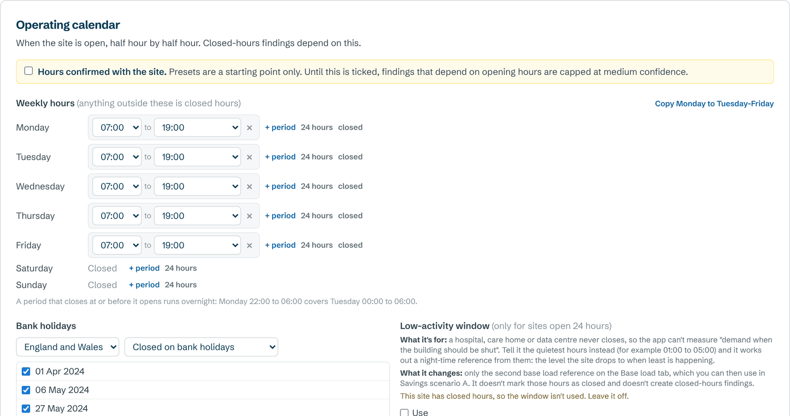
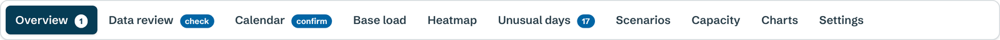
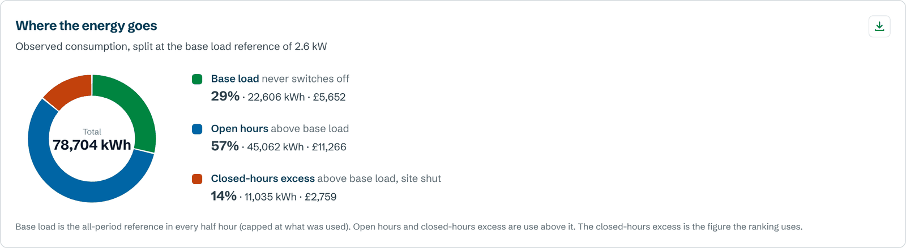
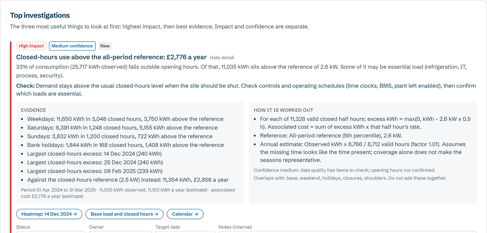
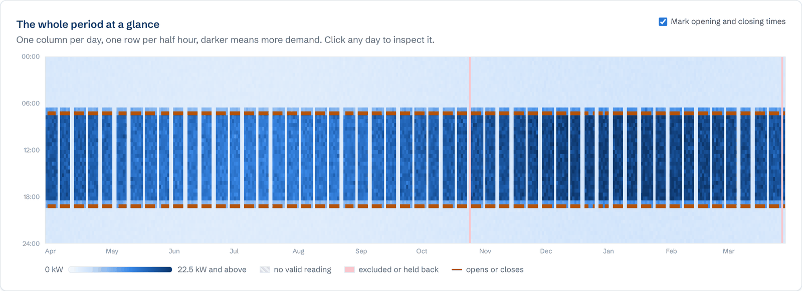
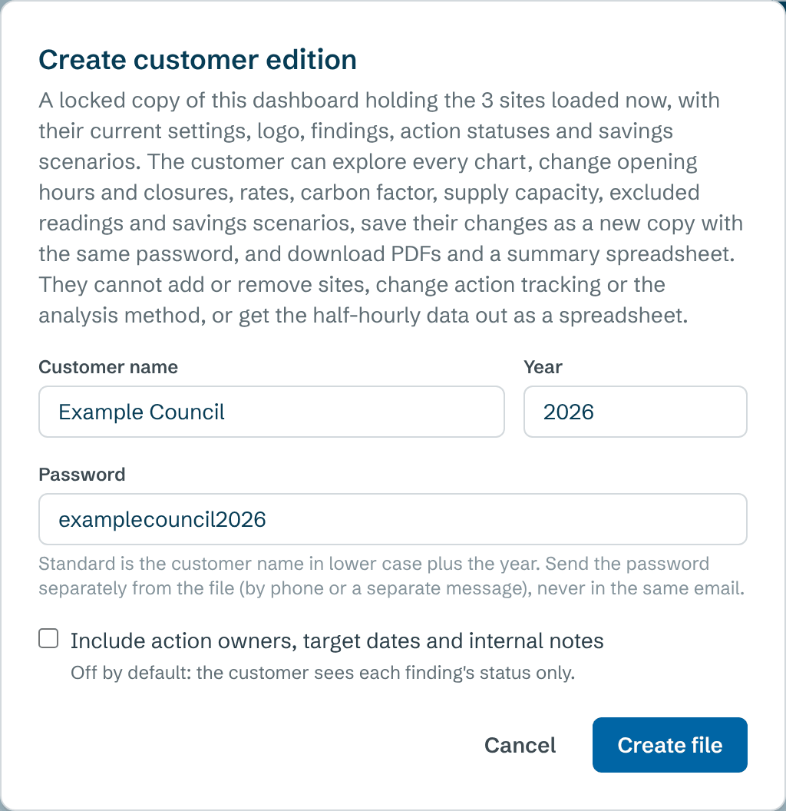
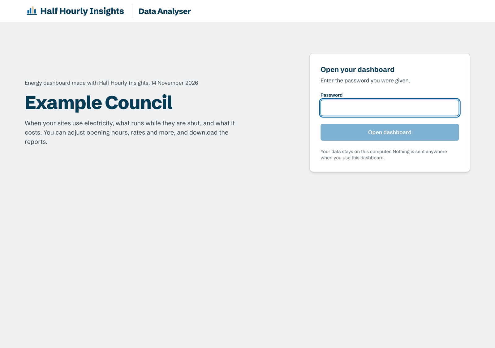

User guide
How to load your half-hourly data, read the results and share them

Half Hourly Insights is a free website for UK businesses and public sector organisations. At its centre is the analyser: a tool that reads the half-hourly data from your electricity meters and shows when your buildings use electricity, how much is used while they're closed, what never switches off, and what all of it costs. This guide takes you through using it, from getting your data to sharing the results.
You don't need any energy background. Where a term needs explaining, we explain it, and the glossary on the website covers the rest.
Read section 1. Then, before you share any figures, check three things on every site: the opening hours are right and marked as confirmed, the Data review tab has nothing important left waiting for a decision, and the data quality rating isn't Poor. Most wrong answers come from one of those three.
The analyser runs entirely in your web browser. Your meter files are read on your own computer and are never uploaded to us or anyone else. Once the page has loaded you can even disconnect from the internet and carry on working.

The analyser does the number crunching. The rest of the website explains what the numbers mean and what to do about them. These pages are the most useful alongside the analyser:
| Page | Use it to |
|---|---|
| How to get your half-hourly data | Find out who holds your data and what to ask for. It includes a letter template you can send to your supplier. |
| Worked examples | See a full analysis of a made-up office and a made-up primary school, finding by finding. Download the example files and follow along in the analyser. |
| Sector pages | See what normal looks like for schools, offices and council buildings, leisure centres, healthcare, industrial sites and retail, and what to check first. |
| Guides | Read about out-of-hours use, base load, supply capacity, reading a heatmap, proving a saving and half-hourly settlement in more depth. |
| How it works | Understand the method behind every figure: how files are read and checked, how base load is measured and how costs are worked out. |
| Glossary and FAQ | Look up a term, or check the answer to a common question. |
| Contact | Ask us for help turning your findings into savings, or for a full energy audit. There's no obligation. |
Read the office worked example, then load the example file into the analyser and find the same figures yourself. You'll then know your way round before you load your own data.
Ask your electricity supplier for the half-hourly consumption data for each meter, covering at least the last 12 months, as an Excel or CSV file. Many suppliers also let you download it from your online account. Your energy broker, energy manager or building management system may hold it too. The website's How to get your half-hourly data page has a letter template you can use.
The analyser reads Excel (.xlsx, .xlsm, .xls) and CSV or text files. Use one meter per file. The file name becomes the site name, so name each file after the building.
| Layout | Looks like |
|---|---|
| Days down the side | A date, then 48 half-hourly readings across the row. This is the most common supplier format. |
| Days across the top | One column per day, with 48 rows of readings. It's turned round automatically. |
| Timestamped | One row per reading, with its date and time. 15-minute readings are added up into half hours. Hourly data can't be used. |

Each site is analysed over its last 12 months by default, so it's judged on how it runs now. You can choose a different period from the bar at the top of the site page. Longer-term trends, such as base load by month, still use the whole file.
Each site also gets a data quality rating: Good, Check or Poor. With less than about 11 months of valid readings, annual figures are marked as estimates, and with less than six months they aren't shown.
The analyser needs to know when each building should be open, half hour by half hour. Every figure for use while closed depends on this, so it's the most important setting. If a building is used on Saturdays but its calendar says it's closed, all that Saturday use will show up as waste.

For a hospital or other 24-hour site there's no "use while closed" to measure. Set it as always open, and use the low-activity window to tell the analyser its quietest hours, such as 01:00 to 05:00. The analysis then focuses on night-time use, base load and peaks.
The Set building type and hours for all sites button on the main page sets the same hours for every site at once, which saves time across a large estate. You can then adjust individual sites.
The main page ranks your sites by the yearly cost of electricity used while they're closed, above what never switches off. That's usually the cheapest kind of use to cut, so it's a good place to start. Alongside are each site's yearly use and cost, its base load, the share of use while closed, its data quality rating and how many findings it has. The Opportunities view lists every finding across all your sites in one place.

Click a site to open its page. The Overview tab shows the key figures, each marked as measured or estimated, the three issues most worth investigating, and every finding. Next to it, the Solar tab shows how much of a solar system's output the site would use at different sizes, with a button that opens our sister site, the UK Solar Calculator, with those figures filled in. The other tabs go into more detail: Base load, Heatmap, Unusual days, savings Scenarios, supply Capacity, Charts and Settings.


Each finding has two separate ratings. Impact is how much it could matter, based on its cost and share of the site's use. Confidence is how reliable the evidence is, based on data quality, how much data there is and whether the hours are confirmed. A finding with high impact and low confidence is worth checking before you quote it. Click Show calculation and evidence on any finding to see exactly how it was worked out.
You can also record what's happening with each finding, such as Under review or Action agreed, with an owner, a date and notes. These are saved with your project.

The heatmap shows every half hour of the year on one chart. Normal use shows as a dark band during opening hours. Anything dark outside that band, at night, at weekends or in holidays, is worth a closer look. Click any day to compare it with a typical day. The website's guide to reading a heatmap explains the common patterns.
Each cost shows what a pattern costs now, at the rates you entered. Any saving depends on what you change. Findings also overlap (weekend use is part of the use-while-closed figure, for example), so don't add them up. To estimate a saving, use the Scenarios tab, which avoids counting the same saving twice.
| Download | What's in it |
|---|---|
| Site summary (PDF) | One page per site, with an appendix covering the top issues, every finding and how it was worked out, the data review and the opening hours. |
| Download all charts (PDF) | A full report for a site, with every chart and table, plus the appendix. |
| Portfolio report (PDF) | The ranked table of sites, the findings across your estate, then a page for each site. |
| Table to Excel | The Where to start table, in the order shown. |
| Export to Excel | A full workbook: summary, findings, scenarios, data review, calendars and rates, and the half-hourly readings for each site. |
| Charts | Every chart has its own download button, so you can use it in a presentation or report. |
Enter your organisation's name, and add your logo if you'd like, in Report details before you download. Both appear on every PDF.
Nothing is stored in your browser between visits, so closing the page clears your work. Click Save project to download a single project file containing your readings, settings, opening hours, finding statuses, notes and scenarios. Click Open project next time to carry on where you left off, or send the file to a colleague. The project file contains your meter data, so store it as securely as the original files.
If you're a consultant or energy manager sharing results with someone else, you can create a customer dashboard: a single file holding one client's sites, locked with a password. Your client can open it in their browser, explore every chart, adjust the things they know better than you do, such as opening hours and rates, and download their own reports.


The suggested password is the customer's name in lower case followed by the year, such as examplecouncil2026. That's easy to guess, so for anything sensitive add something random and keep a note of it. A forgotten password can't be recovered, and a dashboard can't be updated or withdrawn once it's sent.
Your client can't add or remove sites, change your finding statuses, or export the half-hourly readings. If they change anything, they can save a new copy of the dashboard with their changes, and every report they download afterwards says it includes their changes.
| Problem | What to do |
|---|---|
| A file is refused because it contains several meters | Split it into one file per meter (one per MPAN) and load them separately. |
| Hourly data is refused | The analyser needs half-hourly (or 15-minute) readings. Ask your supplier for half-hourly data. |
| "Already loaded" | The same readings are already loaded as another site. Use the existing one. |
| Some days are missing from the analysis | Check Held back for review on the Data review tab. Clock-change days and conflicting duplicate rows wait for your decision. |
| No annual figures | There are fewer than six months of valid readings. Use the figures for the period you have, or load a longer file. |
| Every finding is Medium confidence | Confirm the opening hours on the Calendar tab, and read any Check notes on the data quality rating. |
| Use while closed looks far too high | Check the opening hours. A site that's open 24 hours but set up as an office will show most of its use as closed hours. |
| Time-of-day rates are ignored | Read the message under the rates. A gap or overlap between time bands makes the analyser fall back to the flat rate. |
| A customer dashboard won't open | Check the password. Save the file and open it in Chrome or Edge, not in an email preview. |
If you'd like help understanding your results or turning them into savings, get in touch through the contact page on the website or email {{EMAIL}}. There's no obligation.